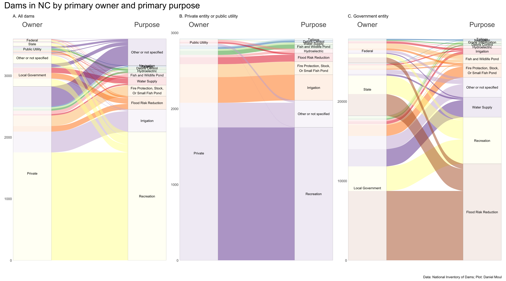
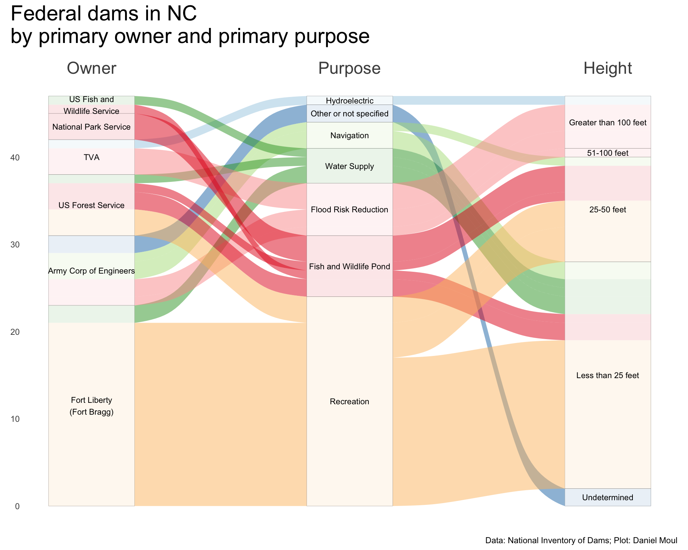
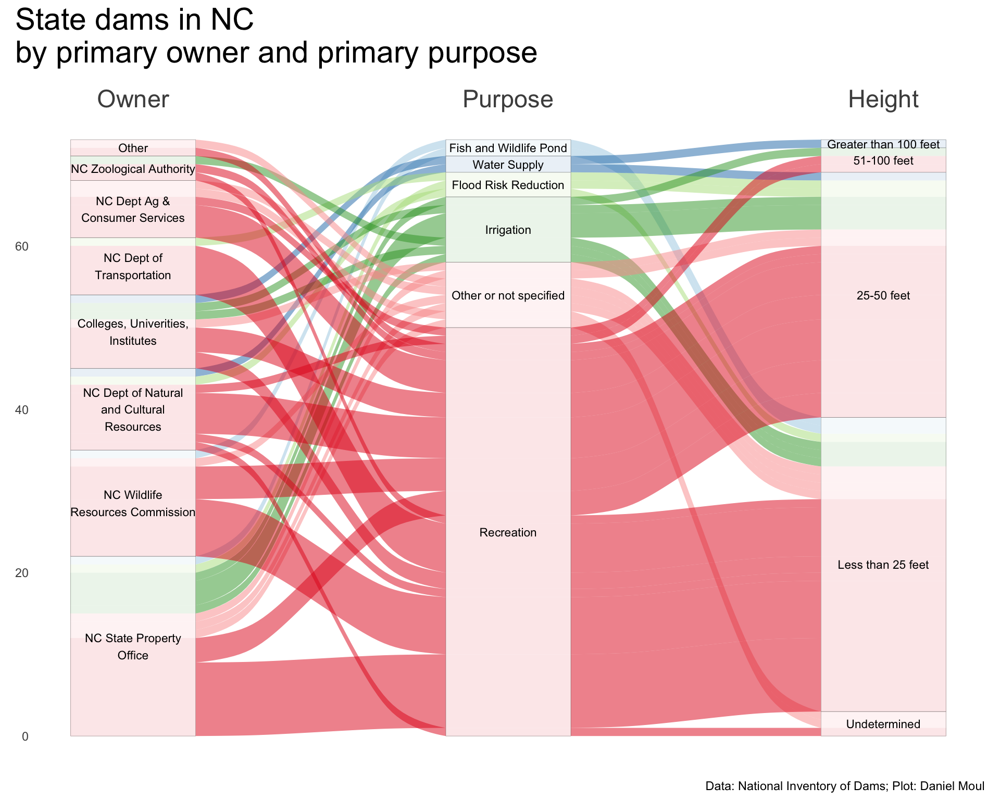
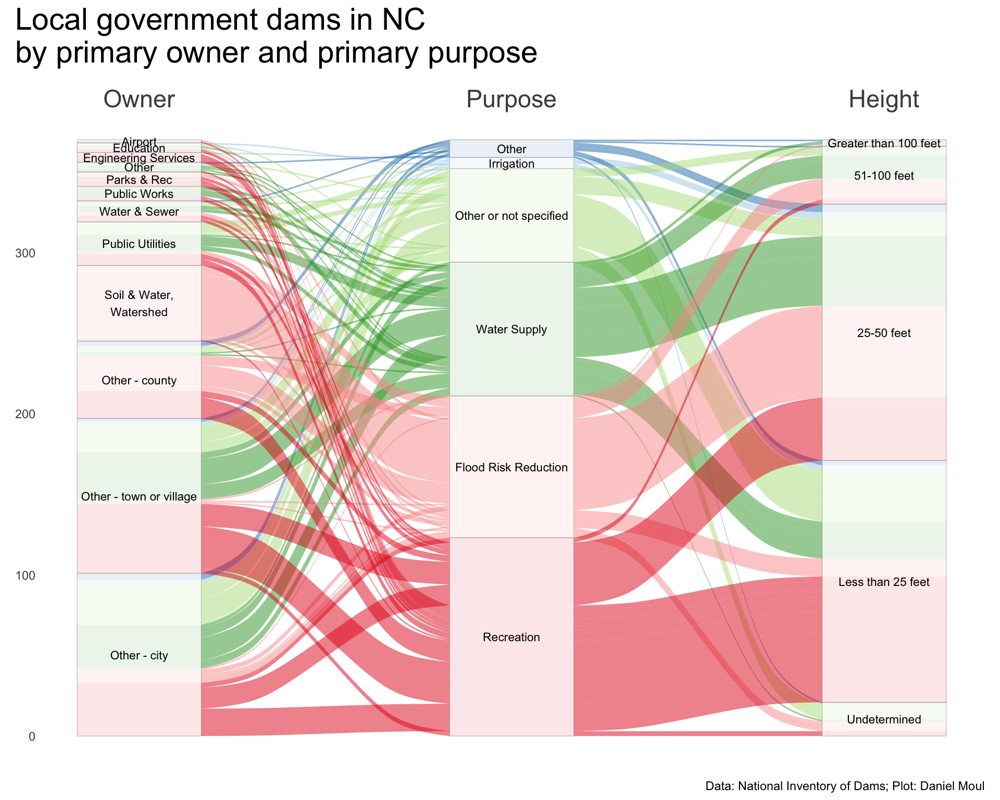
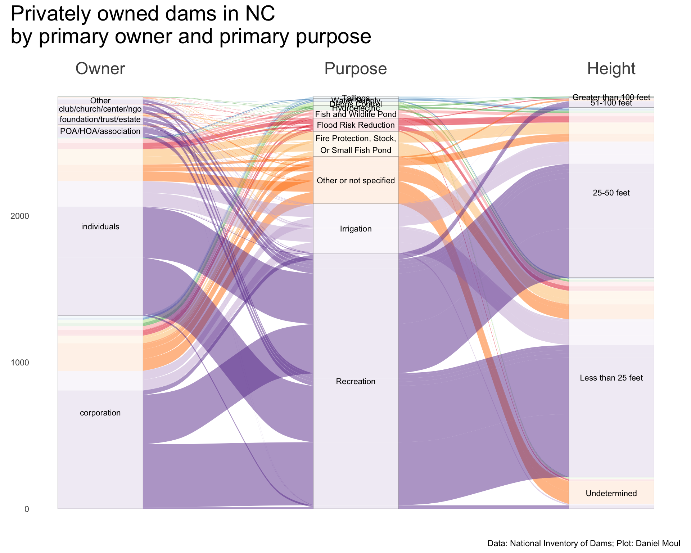
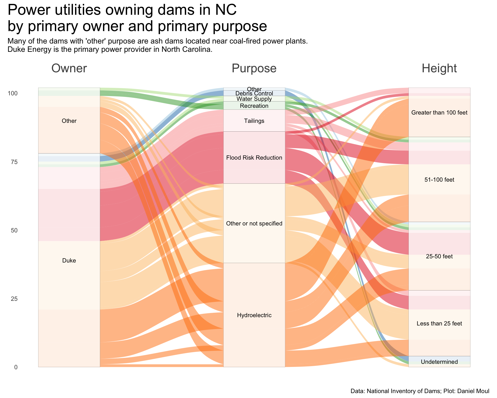

Show the code
<- dams |> filter (ownerTypeIds == "Private" ) |> nrow ()<- dams |> filter (state_abb == "NC" )<- dams_no_geo |> filter (state_abb == "NC" )<- nrow (dams_no_geo_nc)<- dams_nc |> filter (ownerTypeIds == "Private" )<- dams_no_geo_nc |> filter (ownerTypeIds %in% c ("Private" , "Public Utility" ))<- nrow (dams_no_geo_nc_private)<- dams_no_geo_nc_private |> count (primaryPurposeId, sort = TRUE ) |> mutate (pct = n / sum (n))# nc_duke <- dams_no_geo_nc |> #_nc_private |> # filter(str_detect(ownerNames, "Duke Energy|DUKE POWER")) |> # count(primaryPurposeId, sort = TRUE) |> # mutate(pct = n / sum(n)) # # nc_private_compare <- # left_join( # dams_no_geo_nc_private |> # count(primaryPurposeId, sort = TRUE, name = "nc_n") |> # mutate(nc_pct = nc_n / sum(nc_n)), # dams_no_geo_nc |> # filter(str_detect(ownerNames, "Duke Energy|DUKE POWER")) |> # count(primaryPurposeId, sort = TRUE, name = "duke_n") |> # # replace_na(list(duke_n = 0)) |> # mutate(duke_pct = duke_n / sum(duke_n, na.rm = TRUE)), # by = "primaryPurposeId" # ) |> # mutate(duke_n = ifelse(is.na(duke_n), 0, duke_n), # duke_pct = ifelse(is.na(duke_pct), 0, duke_pct)) |> # mutate(nc_label = glue("{primaryPurposeId} ({nc_n})"), # nc_label = fct_reorder(nc_label, nc_pct), # # duke_primaryPurposeId = primaryPurposeId, # duke_label = glue("{primaryPurposeId} ({duke_n})"), # duke_label = fct_reorder(duke_label, duke_pct, # .na_rm = TRUE) # ) |> # mutate(duke_n = ifelse(duke_n != 0, duke_n, NA_real_), # duke_pct = ifelse(duke_pct != 0, duke_pct, NA_real_))
Who owns all these dams, and what are their primary purposes? To answer more concretely than in Chapter 6
The NID includes ownership categories private, public utility, and three levels of government: federal, state, and local, as well as “Other or not specified”. The alluvial plots below offer a nice summary of the proportions of dam ownership and purpose.
Some observations:
Three quarters of dams are privately owned (Figure 7.1 panel A).
Nearly two thirds of the privately owned dams are for recreation (panel B).
In contrast, dams owned by local governments are nearly equally split among recreation, flood risk reduction, and water supply, with a smaller proportion not specified (Figure 7.4 ).
The small number of federally owned dams are split among most categories (Figure 7.2 ).
State-owned dams are mostly for recreation (Figure 7.3 ).
Privately owned dams are about equally owned by individuals and corporations, with only about 10% owned by NGOs or trusts (Figure 7.5 ).
Dams owned by public utilities are mostly for hydroelectric power or the purpose is not specified; the latter mostly seem to be ash dams near current or decommissioned coal-powered electricity generation plants (Figure 7.6 ).
Overview
In Figure 7.1 I provide three admittedly busy plots on the same row to make it easier to compare them. Panel A shows all dams, and panels B and C include privately-owned and government-owned dams, respectively.
Show the code
# following example at https://mjfrigaard.github.io/fm-ggp2/alluvial_charts.html <- dams_nc |> st_drop_geometry () |> count (primaryOwnerTypeId, primaryPurposeId) |> mutate (primaryOwnerTypeId = fct_reorder (primaryOwnerTypeId, n, sum),primaryPurposeId = fct_reorder (primaryPurposeId, n, sum)<- ggplot (data = nc_wide,aes (axis1 = primaryOwnerTypeId, axis2 = primaryPurposeId,y = n)) + scale_x_discrete (limits = c ("Owner" , "Purpose" ),expand = c (0.1 , 0.07 ),position = "top" ) + geom_alluvium (aes (fill = primaryPurposeId),show.legend = FALSE ) + geom_stratum (linewidth = 0.05 ,alpha = 0.8 ) + geom_text (stat = "stratum" ,aes (label = after_stat (stratum)),size = 3 ) + scale_fill_brewer (palette = "Paired" ) + theme (axis.text.x = element_text (size = rel (2 ))) + labs (subtitle = "A. All dams" ,y = NULL <- dams_no_geo_nc_private |> count (primaryOwnerTypeId, primaryPurposeId) |> mutate (primaryOwnerTypeId = fct_reorder (primaryOwnerTypeId, n, sum),primaryPurposeId = fct_reorder (primaryPurposeId, n, sum)<- ggplot (data = nc_private_wide,aes (axis1 = primaryOwnerTypeId, axis2 = primaryPurposeId,y = n)) + scale_x_discrete (limits = c ("Owner" , "Purpose" ),expand = c (0.1 , 0.07 ),position = "top" ) + geom_alluvium (aes (fill = primaryPurposeId),show.legend = FALSE ) + geom_stratum (linewidth = 0.05 ,alpha = 0.8 ) + geom_text (stat = "stratum" ,aes (label = after_stat (stratum)),size = 3 ) + scale_fill_brewer (palette = "Paired" ) + theme (axis.text.x = element_text (size = rel (2 ))) + labs (subtitle = "B. Private entity or public utility" ,y = NULL <- dams_no_geo |> filter (primaryOwnerTypeId %in% c ("Federal" , "State" , "Local Government" )) |> count (primaryOwnerTypeId, primaryPurposeId) |> mutate (primaryOwnerTypeId = fct_reorder (primaryOwnerTypeId, n, sum),primaryPurposeId = fct_reorder (primaryPurposeId, n, sum)<- ggplot (data = nc_gov_wide,aes (axis1 = primaryOwnerTypeId, axis2 = primaryPurposeId,y = n)) + scale_x_discrete (limits = c ("Owner" , "Purpose" ),expand = c (0.1 , 0.07 ),position = "top" ) + geom_alluvium (aes (fill = primaryPurposeId),show.legend = FALSE ) + geom_stratum (linewidth = 0.05 ,alpha = 0.8 ) + geom_text (stat = "stratum" ,aes (label = after_stat (stratum)),size = 3 ) + scale_fill_brewer (palette = "Paired" ) + theme (axis.text.x = element_text (size = rel (2 ))) + labs (subtitle = "C. Government entity" ,y = NULL + p2 + p3 + plot_annotation (title = "Dams in NC by primary owner and primary purpose" ,caption = my_caption

Figure 7.1: Dams in NC by owner and purpose
Government-owned
Let’s dig into the dams owned by government entities. There are a surprising number federal, state, and local government entities that own dams in North Carolina. The following three plots include a third dimension: dam height (specifically nidHeight), which I think could be a good proxy for the level of investment required to create and maintain the dam.
Show the code
<- dams_nc |> st_drop_geometry () |> mutate (ownerNameSimplified = case_when (str_detect (ownerNames, "Army|USACE" ) ~ "Army Corp of Engineers" ,str_detect (ownerNames, "USDA FS|Forest" ) ~ "US Forest Service" ,str_detect (ownerNames, "USDA FS|Forest" ) ~ "US Forest Service" ,str_detect (ownerNames, "DOI NPS" ) ~ "National Park Service" ,str_detect (ownerNames, "FISH" ) ~ "US Fish and \n Wildlife Service" ,str_detect (ownerNames, "Fort L" ) ~ "Fort Liberty \n (Fort Bragg)" ,str_detect (ownerNames, "USDA FS|Forest" ) ~ "US Forest Service" ,.default = ownerNames|> filter (primaryOwnerTypeId == "Federal" ) |> count (ownerNameSimplified, primaryPurposeId, nidHeightId) |> mutate (ownerNameSimplified = fct_reorder (ownerNameSimplified, n, sum),primaryPurposeId = fct_reorder (primaryPurposeId, n, sum),nidHeightId = fct_rev (nidHeightId)<- ggplot (data = nc_fed_simple_wide,aes (axis1 = ownerNameSimplified, axis2 = primaryPurposeId, axis3 = nidHeightId,y = n)) + scale_x_discrete (limits = c ("Owner" , "Purpose" , "Height" ),expand = c (0.1 , 0.07 ),position = "top" ) + geom_alluvium (aes (fill = primaryPurposeId),show.legend = FALSE ) + geom_stratum (linewidth = 0.05 ,alpha = 0.8 ) + geom_text (stat = "stratum" ,aes (label = after_stat (stratum)),size = 3 ) + scale_fill_brewer (palette = "Paired" ) + theme (axis.text.x = element_text (size = rel (2 ))) + labs (y = NULL + plot_annotation (title = "Federal dams in NC \n by primary owner and primary purpose" ,caption = my_caption

Figure 7.2: Federal dams in NC by owner and purpose
Show the code
<- dams_nc |> st_drop_geometry () |> filter (primaryOwnerTypeId == "State" ) |> mutate (ownerNameSimplified = case_when (str_detect (ownerNames, "State of North Carolina, State Property Office" ) ~ "NC State Property \n Office" ,str_detect (ownerNames, "NC Wildlife Resources Commission" ) ~ "NC Wildlife \n Resources Commission" ,str_detect (ownerNames, "NC Department of Natural and Cultural Resources" ) ~ "NC Dept of Natural \n and Cultural \n Resources" ,str_detect (ownerNames, "NC Department of Transportation" ) ~ "NC Dept of \n Transportation" ,str_detect (ownerNames, "Agricult" ) ~ "NC Dept Ag & \n Consumer Services" ,str_detect (ownerNames, "NC Zoological Authority" ) ~ "NC Zoological Authority" ,str_detect (ownerNames, "College|University|Inst" ) ~ "Colleges, Univerities, \n Institutes" ,.default = "Other" |> count (ownerNameSimplified, primaryPurposeId, nidHeightId) |> mutate (ownerNameSimplified = fct_reorder (ownerNameSimplified, n, sum),primaryPurposeId = fct_reorder (primaryPurposeId, n, sum),nidHeightId = fct_rev (nidHeightId)<- ggplot (data = nc_state_simple_wide,aes (axis1 = ownerNameSimplified, axis2 = primaryPurposeId, axis3 = nidHeightId,y = n)) + scale_x_discrete (limits = c ("Owner" , "Purpose" , "Height" ),expand = c (0.1 , 0.07 ),position = "top" ) + geom_alluvium (aes (fill = primaryPurposeId),show.legend = FALSE ) + geom_stratum (linewidth = 0.05 ,alpha = 0.8 ) + geom_text (stat = "stratum" ,aes (label = after_stat (stratum)),size = 3 ) + scale_fill_brewer (palette = "Paired" ) + theme (axis.text.x = element_text (size = rel (2 ))) + labs (y = NULL + plot_annotation (title = "State dams in NC \n by primary owner and primary purpose" ,caption = my_caption

Figure 7.3: State dams in NC by owner and purpose
Show the code
<- dams_nc |> st_drop_geometry () |> filter (primaryOwnerTypeId == "Local Government" ) |> mutate (ownerNameSimplified = case_when (str_detect (ownerNames, "Parks" ) ~ "Parks & Rec" ,str_detect (ownerNames, "Airport" ) ~ "Airport" ,str_detect (ownerNames, "Soil" ) ~ "Soil & Water, \n Watershed" ,str_detect (ownerNames, "Utilit" ) ~ "Public Utilities" ,str_detect (ownerNames, "Sewer|Storm" ) ~ "Water & Sewer" ,str_detect (ownerNames, "Public Works" ) ~ "Public Works" ,str_detect (ownerNames, "Engineering" ) ~ "Engineering Services" ,str_detect (ownerNames, "Educ|Uni" ) ~ "Education" ,str_detect (ownerNames, "Town|Village" ) ~ "Other - town or village" ,str_detect (ownerNames, "City|CIty" ) ~ "Other - city" ,str_detect (ownerNames, "County" ) ~ "Other - county" ,.default = "Other" primaryPurposeId = fct_lump_n (primaryPurposeId, 5 )|> count (ownerNameSimplified, primaryPurposeId, nidHeightId) |> mutate (ownerNameSimplified = fct_reorder (ownerNameSimplified, n, sum),primaryPurposeId = fct_reorder (primaryPurposeId, n, sum),nidHeightId = fct_rev (nidHeightId)<- ggplot (data = nc_local_simple_wide,aes (axis1 = ownerNameSimplified, axis2 = primaryPurposeId, axis3 = nidHeightId,y = n)) + scale_x_discrete (limits = c ("Owner" , "Purpose" , "Height" ),expand = c (0.1 , 0.07 ),position = "top" ) + geom_alluvium (aes (fill = primaryPurposeId),show.legend = FALSE ) + geom_stratum (linewidth = 0.05 ,alpha = 0.8 ) + geom_text (stat = "stratum" ,aes (label = after_stat (stratum)),size = 3 ) + scale_fill_brewer (palette = "Paired" ) + theme (axis.text.x = element_text (size = rel (2 ))) + labs (y = NULL + plot_annotation (title = "Local government dams in NC \n by primary owner and primary purpose" ,caption = my_caption

Figure 7.4: Local government dams in NC by owner and purpose
Privately owned
Nearly all privately owned dams are less than 50 ft hight.
Private owners subsumed in “Other” include “scouts/ymca/camp” and “farm/nursery”.
Show the code
<- dams_nc |> st_drop_geometry () |> filter (primaryOwnerTypeId %in% c ("Private" )) |> mutate (ownerNameSimplified = str_to_lower (ownerNames)) |> mutate (ownerNameSimplified = case_when (str_detect (ownerNameSimplified, "inc[.]|inc$|llc|lp$|corp|co[.]|firm|manuf|company|enterpr" ) ~ "corporation" ,str_detect (ownerNameSimplified, "international|partnership|group|property|trucks|solutions" ) ~ "corporation" ,str_detect (ownerNameSimplified, "properties|preserve|holdings|apartments|condo" ) ~ "corporation" ,str_detect (ownerNameSimplified, "energy|power|light|hydro" ) ~ "utility" ,str_detect (ownerNameSimplified, "farm|nursery" ) ~ "farm/nursery" ,str_detect (ownerNameSimplified, "club|church|presbytery|center|assembly|lodge|cathedral" ) ~ "club/church/center/ngo" ,str_detect (ownerNameSimplified, "council|conservancy|habitat|veterans" ) ~ "club/church/center/ngo" ,str_detect (ownerNameSimplified, "poa|hoa|owners|assoc" ) ~ "POA/HOA/association" ,str_detect (ownerNameSimplified, "scouts|ymca|camp" ) ~ "scouts/ymca/camp" ,str_detect (ownerNameSimplified, "foundation|trust|estate|heirs" ) ~ "foundation/trust/estate" ,str_detect (ownerNameSimplified, "indians|tribal" ) ~ "tribe" ,str_detect (ownerNameSimplified, "parks & rec|city|county|nc dep|water" ) ~ "local/regional/state govt" ,str_detect (ownerNameSimplified, "national institutes" ) ~ "federal gov" ,str_detect (ownerNameSimplified, "airport|authorit" ) ~ "airport/regional authority" ,str_detect (ownerNameSimplified, "school|college|univ" ) ~ "school, college, \n or university" ,.default = "individuals" # "Other" |> filter (ownerNameSimplified != "local/regional/state govt" ) |> # apparently miscategorized mutate (ownerNameSimplified = fct_lump_n (ownerNameSimplified, 5 ),other_level = "other" ) |> count (ownerNameSimplified, primaryPurposeId, nidHeightId) |> mutate (ownerNameSimplified = fct_reorder (ownerNameSimplified, n, sum),primaryPurposeId = fct_reorder (primaryPurposeId, n, sum),nidHeightId = fct_rev (nidHeightId)<- ggplot (data = nc_private_simple_wide,aes (axis1 = ownerNameSimplified, axis2 = primaryPurposeId, axis3 = nidHeightId,y = n)) + scale_x_discrete (limits = c ("Owner" , "Purpose" , "Height" ),expand = c (0.1 , 0.07 ),position = "top" ) + geom_alluvium (aes (fill = primaryPurposeId),show.legend = FALSE ) + geom_stratum (linewidth = 0.05 ,alpha = 0.8 ) + geom_text (stat = "stratum" ,aes (label = after_stat (stratum)),size = 3 ) + scale_fill_brewer (palette = "Paired" ) + theme (axis.text.x = element_text (size = rel (2 ))) + labs (y = NULL + plot_annotation (title = "Privately owned dams in NC \n by primary owner and primary purpose" ,caption = my_caption

Figure 7.5: Privately owned dams in NC by owner and purpose
Power-generating utilities have unique needs to store and manage water and waste coal ash.
Show the code
<- dams_nc |> st_drop_geometry () |> filter (primaryOwnerTypeId %in% c ("Private" , "Public Utility" )) |> mutate (ownerNameSimplified = str_to_lower (ownerNames)) |> filter (str_detect (ownerNameSimplified, "energy|power|light|hydro" )) |> mutate (ownerNameSimplified = case_when (str_detect (ownerNameSimplified, "duke" ) ~ "Duke" ,.default = "Other" primaryPurposeId = fct_lump_n (primaryPurposeId, 6 )|> count (ownerNameSimplified, primaryPurposeId, nidHeightId) |> mutate (ownerNameSimplified = fct_reorder (ownerNameSimplified, n, sum),primaryPurposeId = fct_reorder (primaryPurposeId, n, sum),nidHeightId = fct_rev (nidHeightId)<- ggplot (data = nc_power_utility,aes (axis1 = ownerNameSimplified, axis2 = primaryPurposeId, axis3 = nidHeightId,y = n)) + scale_x_discrete (limits = c ("Owner" , "Purpose" , "Height" ),expand = c (0.1 , 0.07 ),position = "top" ) + geom_alluvium (aes (fill = primaryPurposeId),show.legend = FALSE ) + geom_stratum (linewidth = 0.05 ,alpha = 0.8 ) + geom_text (stat = "stratum" ,aes (label = after_stat (stratum)),size = 3 ) + scale_fill_brewer (palette = "Paired" ) + theme (axis.text.x = element_text (size = rel (2 ))) + labs (y = NULL + plot_annotation (title = "Power utilities owning dams in NC \n by primary owner and primary purpose" ,subtitle = glue ("Many of the dams with 'other' purpose are ash dams located near coal-fired power plants." ," \n Duke Energy is the primary power provider in North Carolina." ),caption = my_caption

Figure 7.6: Power utility owned dams in NC by owner and purpose